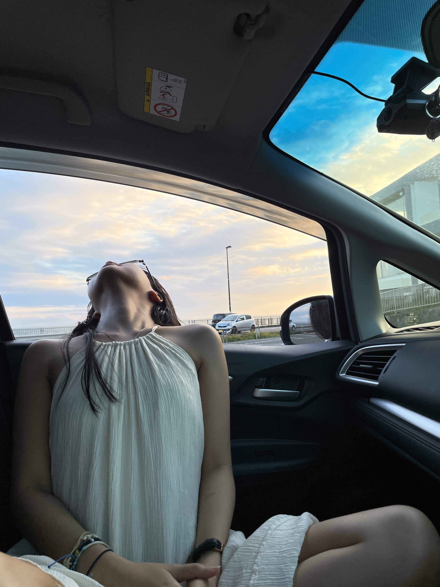
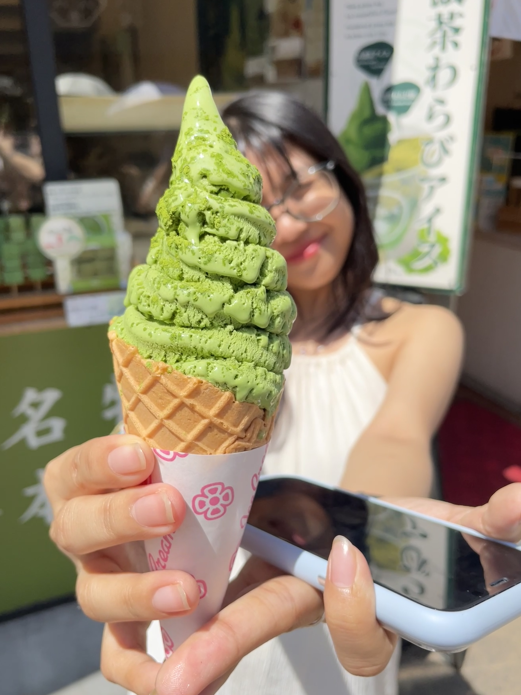
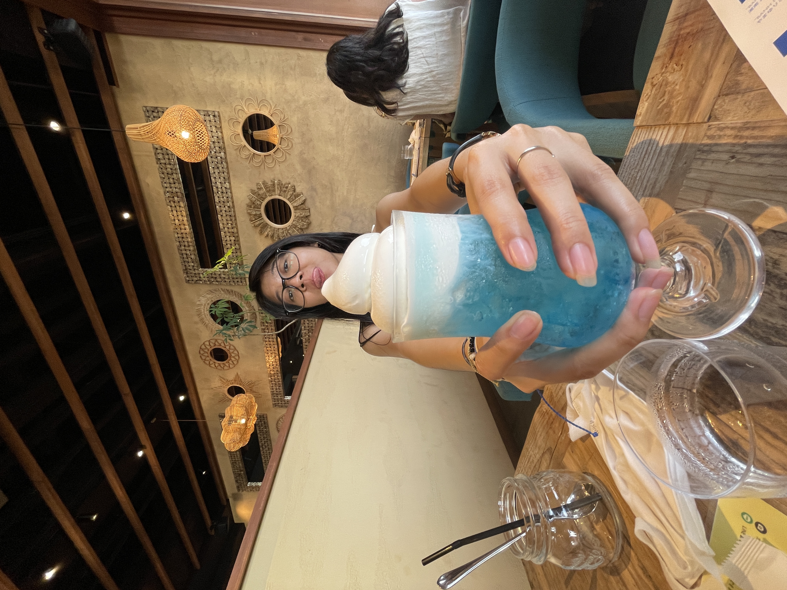
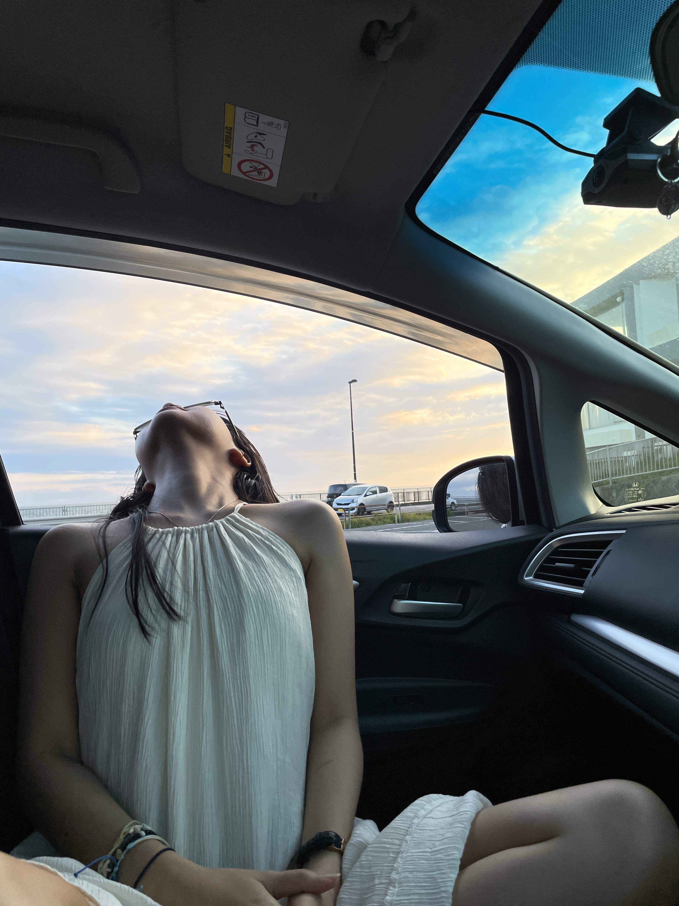
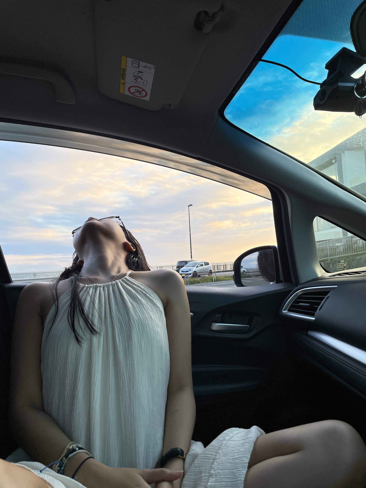

A jet lagged tourist, a sleep-deprived driver, scorching hot summer weather... Does not sound like the ingredients for a good trip but it's okay. We are young.

How To Get Over Jet Lag?
A short nap in the car, a stroll along a seaside town to refresh you, and of course...
Foods...
Plenty of foods. And puns.

Love it so matcha.
The tempura-ture might be high, but the tempura was just right.

Soda-lightful.
Berry berry good.
And Cultures
Of course we could not go to one of Japan's ancient capital and not visit the traditional spots; Tsurugaoka Hachimangu Shrine, Hokoku-ji Temple, Studio Ghibli store, and the railway crossing from Slam Dunk.
Sadly looking for a parking spot near the railway crossing was not that easy. And I needed to pee. And the traffic was moving very slowly. And we missed the sunset.
But It's Okay
The railway crossing is overrated anyway. This is better. And less crowd too.
And That's How You Get Over Jet Lag
By taking a late night stroll to your hotel, slightly drunk.
 
